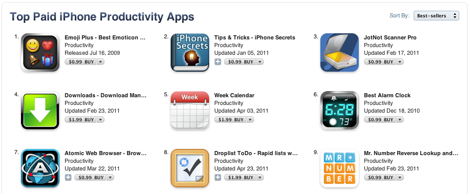
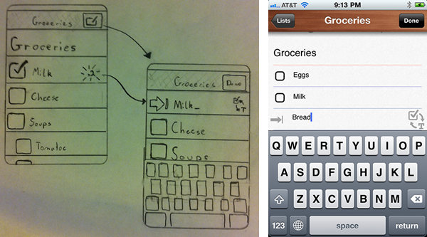
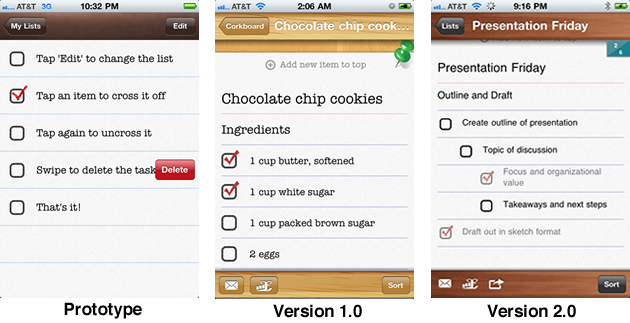

Droplist was my first venture into commercial, consumer-positioned iOS apps. I wanted to make a to-do list app which emphasized fast entry and flexible access to data.
The results were inspiring: I was featured on the front page of the Appstore, peaked at the #8 top paid app in Productivity. It continues to earn steady revenues to this day.

I performed an 'artifact collection' and informal human observation study to learn how people took notes. My takeaways? That people generally make lists, in haste, with whatever is available. Speed of entry is always the limiting factor. Most apps on the market today take far too long to enter tasks.
 I designed an simple app which would allow the user to quickly create lists from a variety of means:

I approached the project from a rapid-prototyping perspective, quickly creating functional prototypes and testing them with users. I released a version 1.0 with a basic wood/corkboard design with great success, achieving a top-10 spot in the Productivity section of the Appstore and features by Apple on the main screen.
In version 2.0 I simplified the sync process by implementing behind-the-scenes syncing of lists. I also commissioned an updated style from artist Jordan Rader who gave the app a more luxurious feel. I increased the price, and sales doubled day-over-day.
{kind=link}
{kind=link}
{kind=link}
{kind=link}